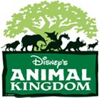

Roteiros dos parques

Disney’s Animal Kingdom

Algumas dicas gerais sobre o Animal Kingdom
- Chegue cedo e saia cedo
Apesar de ser o maior parque em área do Walt Disney World, o Animal é um parque com muito mais cenários do que atrações, então se você chegar cedo, vai conseguir conhecer tudo e lá pelas duas ou três da tarde vai poder aproveitar o resto do dia para ir às compras ou repetir atrações que tenha gostado muito.
- Em parque com muitos shows, o Time Guide é seu aliado
Assim como o Magic Kingdom e o Hollywood Studios, o Animal é um parque com diversos shows. Por isso, fique bem atento aos horários dos shows no Time Guide e planeje seu dia de acordo com a proximidade de cada um. Se está na Ásia por exemplo, fique esperto com os horários do Flights of Wonder e do musical do Nemo, já que os dois ficam por ali.
- Entenda bem o mapa
Como todos os lugares são rodeados de vegetação, se perder no Animal Kingdom não é difícil. Então minha dica é guardar bem o mapa e recorrer a ele de tempos em tempos para você não sair da rota. O AK é dividido em 6 regiões principais e a área da entrada chamada de Oásis, todas cercando a Árvore da Vida que é o símbolo do parque. Conheca quais as principais atrações de cada região e programe o seu dia com algumas dicas que você lê abaixo.
- Como sempre, vá armado com seus Fastpass+ reservados
Usando os ícones
 que já colocamos nos outros roteiros, guie-se para pré-agendar os Fastpass+ para as atrações com maior chance de formar fila. Lembre-se que o ícone azul representa as atrações onde o Fastpass+ é recomendado e o ícone vermelho, onde ele é praticamente indispensável.
que já colocamos nos outros roteiros, guie-se para pré-agendar os Fastpass+ para as atrações com maior chance de formar fila. Lembre-se que o ícone azul representa as atrações onde o Fastpass+ é recomendado e o ícone vermelho, onde ele é praticamente indispensável.
ROTEIRO DO ANIMAL KINGDOM
1. ÁFRICA
A região da África é muito bem construída e abriga uma das principais atrações do parque, o Kilimanjaro Safari. Particularmente, achamos que o Safari é a única atração imperdível que esta região do parque tem para oferecer. No mais, a não ser que você seja aficionado por animais e conservação da natureza, siga do Safari direto para outras regiões do parque.
 IMPERDÍVEL
IMPERDÍVEL
– Kilimanjaro Safaris : É um safari real, em uma área gigantesca criada pela Disney para simular alguns biomas encontrados no continente africano. Nesse passeio você vai entrar em um caminhãozinho que te leva a conhecer diversos animais, chegando bem pertinho de alguns deles. Uma das estrelas do passeio é o leão e como ele dorme entre 18 e 21 horas por dia é bem difícil pegá-lo acordado. Quanto mais cedo, maiores são as suas chances de conseguir vê-lo . Além disso tente sempre ficar do lado esquerdo do caminhão (olhando para frente) para ninguém bloquear sua visão como aconteceu na minha última visita ao Safari. Para isso, peça para o funcionário que está distribuindo as pessoas entre as baias, para ser o primeiro da sua fileira.
: É um safari real, em uma área gigantesca criada pela Disney para simular alguns biomas encontrados no continente africano. Nesse passeio você vai entrar em um caminhãozinho que te leva a conhecer diversos animais, chegando bem pertinho de alguns deles. Uma das estrelas do passeio é o leão e como ele dorme entre 18 e 21 horas por dia é bem difícil pegá-lo acordado. Quanto mais cedo, maiores são as suas chances de conseguir vê-lo . Além disso tente sempre ficar do lado esquerdo do caminhão (olhando para frente) para ninguém bloquear sua visão como aconteceu na minha última visita ao Safari. Para isso, peça para o funcionário que está distribuindo as pessoas entre as baias, para ser o primeiro da sua fileira.
– Festival of the Lion King: um show circense com os personagens do filme do Rei Leão. Um dos melhores shows da Disney na minha opinião. Vale muito muito a pena ir. Fique esperto com o Time Guide, pois a quantidade de apresentações por dia é limitada, principalmente no inverno americano. Antigamente ele era apresentado na finada área Camp Minnie-Mickey, mas com as reformas para a ampliação do parque, o show se mudou para um teatro maior na África.
 SE SOBRAR TEMPO (e convenhamos: estamos falando do Animal Kingdom, ou seja, VAI sobrar tempo!
SE SOBRAR TEMPO (e convenhamos: estamos falando do Animal Kingdom, ou seja, VAI sobrar tempo!  )
)
– Pangani Forest Exploration Trail: Um passeio a pé por um mini-zológico em que a atração principal é a área com os Gorilas. São realmente impressionantes!
2. ÁSIA
Com um cenário absolutamente oriental a Ásia abriga as atrações mais radicais do parque. Corra para pegar um Fastpass para a Expedition Everest e se prepare para conhecer o Pé Grande de pertinho.
 FOOD TIP
FOOD TIP
Se quiser um almoço bacaninha, bem servido e não tão caro (considerando os padrões para parques) dê uma parada no fast food Yak & Yeti Local Food Cafes. Eles servem um yakissoba e um franguinho com arroz e mel deliciosos. Excelente pedida. Só cuidado para não confundir com o restaurante ao lado com o mesmo nome, mas mais caro pois é o que a Disney chama de restaurante table service ( ou seja, “não fast food”, que têm garçom que te atende na base e tudo o mais).
 IMPERDÍVEIS
IMPERDÍVEIS
– Expedition Everest : montanha russa que propõe um encontro com o pé grande (em inglês Yeti) e tem bastante emoção. Apesar da Everest não ter looping, ela tem umas surpresas boas que a faz bem mais “intensa” do que as montanhas russas do Magic Kingdom.
: montanha russa que propõe um encontro com o pé grande (em inglês Yeti) e tem bastante emoção. Apesar da Everest não ter looping, ela tem umas surpresas boas que a faz bem mais “intensa” do que as montanhas russas do Magic Kingdom.
– Kali River Rapids : é a atração que mais molha na Disney. Você entra em grandes barcos e depois enfrenta corredeiras rio abaixo. Não recomendo durante o inverno pois todo mundo sai ensopado e como já falamos aqui, há épocas em que faz bastante frio em Orlando.
: é a atração que mais molha na Disney. Você entra em grandes barcos e depois enfrenta corredeiras rio abaixo. Não recomendo durante o inverno pois todo mundo sai ensopado e como já falamos aqui, há épocas em que faz bastante frio em Orlando.
– Flights of Wonder: Esse show é muito subestimado pela maioria dos turistas, no entanto é um dos mais legais do parque. Todo mundo pensa “impossível um show de pássaros ser legal”. Eu mesmo pensava assim e o Flights of Wonder foi uma das maiores surpresas positivas que eu tive na Disney, nos últimos tempos. Recomendo fortemente.
 SE SOBRAR TEMPO
SE SOBRAR TEMPO
– Maharajah Jungle Trek: outro mini-zológico onde poderão ser vistos tigres, morcegos e até um dragão de Komodo.
3. DISCOVERY ISLAND
 TIRE FOTOS
TIRE FOTOS
A Tree of Life (ou árvore da vida em português) é uma construção fantástica e tem em seu tronco diversos animais esculpidos. Aproveite a ajuda de um Disney Photopass e tire fotos em diferentes ângulos da árvore. Fica também na Discovery Island o Adventures Outpost, onde você encontra o Mickey e a Minnie para fotos.
 IMPERDÍVEL
IMPERDÍVEL
– It’s Tough To Be a Bug: Um filme 3D muito engraçado baseado na história do Vida de Inseto. O cinema é bem legal pois fica embaixo da Árvore da Vida. Enquanto espera para entrar, repare nos cartazes na versão Vida de Inseto, de filmes de verdade.
– Wilderness Explorers: um caça ao tesouro interativo pelo parque que as crianças amam. Assim como nas atrações similares no Magic Kingdom e Epcot, se prepare para investir boa parte do dia se decidir ir.
 SE SOBRAR TEMPO
SE SOBRAR TEMPO
– Discovery Island Trails: mais um mini-zológico onde poderão ser vistos vários animais ao redor da Tree of Life.
4. DINOLAND U.S.A.
Na Dinoland U.S.A. você vai notar uma concentração de atrações voltadas para as crianças, mas não passe batido. Ali estão outras duas disputadas atrações deste parque.
 IMPERDÍVEIS
IMPERDÍVEIS
– Finding Nemo the Musical: Um musical no melhor estilo Broadway, contando a história do filme Procurando o Nemo. Sim, dá um pouco de sono pois a peça e longa (aprox. 30 mins) mas é bem bonita e as músicas são demais.
– DINOSAUR  : É um brinquedo bem divertido, veloz e emocionante que simula uma viagem pela pré-história em busca de uma espécie de dinossauro.
: É um brinquedo bem divertido, veloz e emocionante que simula uma viagem pela pré-história em busca de uma espécie de dinossauro.
 PARA AS CRIANÇAS
PARA AS CRIANÇAS
– Primavera Whril : Montanha-russa de criança que muito adulto acha radical de tanto que chacoalha. Eu mesmo tenho um pouco de medo.
: Montanha-russa de criança que muito adulto acha radical de tanto que chacoalha. Eu mesmo tenho um pouco de medo.
– The Boneyard: um playground daqueles que as crianças gostam de ficar horas brincando e interagem com todo mundo, como se fossem amigos de infância – até mesmo quando elas não falam a mesma língua
– TriceraTop Spin: é como o Dumbo do Magic Kingdom, mas lugar dos elefantes que voam aqui você vai encontrar dinossauros.
5. RAFIKI’S PLANET WATCH
Essa area é inteira dedicada aos animais. Para chegar lá você pega um trem na África e vai até a estação de conservação onde encontrará alguns laboratórios de reprodução de animais, curiosidades sobre algumas espécies raras e em extinção, estudos sobre os habitats naturais e por ai vai. É interessante mas não recomendo para todo mundo. Vá por sua conta em risco e não diga que eu não avisei 
Para chegar no Planet Watch, você terá que embarcar em um trem que dá uma volta no Kilimanjaro Safaris e para em uma ilha/floresta. Lá você poderá ver alguns laboratórios e consultórios veterinários, onde eles tratam os animais do parque de verdade. Tem também umas cabines escuras para você se sentir na selva e ouvir os sons da natureza. Hora ou outra, poderá encontrar personagens da Disney como a Pocahontas, o Rafiki ou até mesmo o Timão do Rei Leão.
6. OÁSIS / SAÍDA
 FOOD TIP
FOOD TIP
Rainforest Café: Um restaurante temático de floresta, muito diferente, barulhento e gostoso. Tem filiais em vários países e no Downtown Disney.